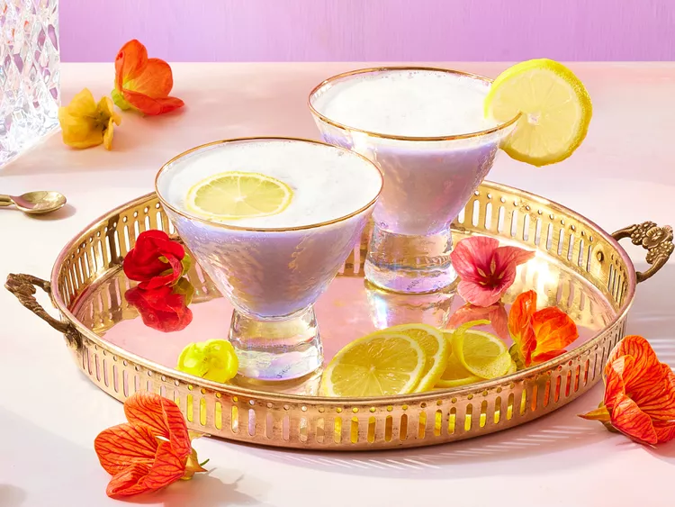

Violet Gin Fizz

Description
Crème de violette and lavender bitters bring floral flavors to this simple spring cocktail.p>
Ingredients
-
Ice as needed
-
1 large pasteurized egg white, or 2 tablespoons aquafaba (liquid from canned chickpeas)
-
3/4 fluid ounce lemon juice
-
3/4 fluid ounce simple syrup
-
1/2 fluid ounce crème de violette
-
2 dashes lavender bitters (optional)
-
1 1/2 fluid ounces chilled club soda
-
2 lemon wheels, for garnish
Steps
-
Fill a cocktail shaker half full with ice. Add gin, egg white, lemon juice, simple syrup, crème de violette, and bitters. Cover and shake until outside of shaker is frosted, about 30 seconds.
-
Strain into a measuring cup; discard ice. Return cocktail to shaker; cover and shake until pressure builds and mixture starts to emulsify, about 45 seconds.
-
Pour club soda into a glass. Slowly strain cocktail into glass, allowing foam to rise. Garnish with lemon wheel.